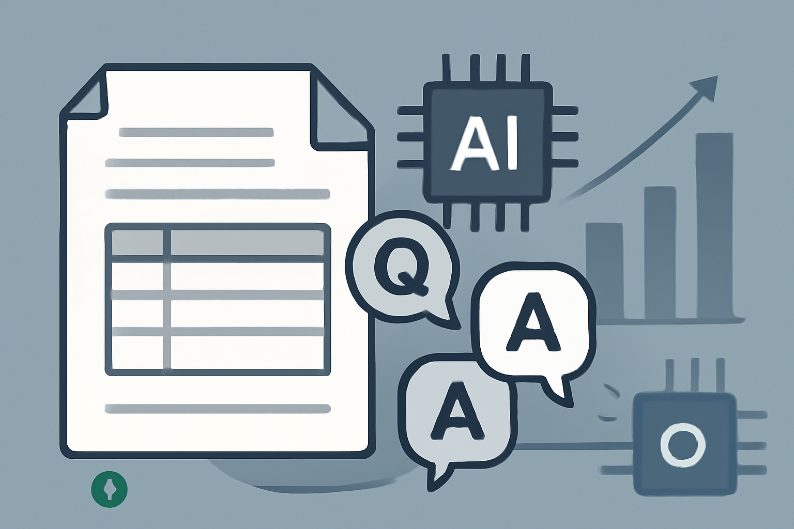

03 Hugging Face
OCR 없이 문서 답변을 생성하는 모델
mit 사내 사용 가능공개일 03.09

문서 질의응답은 크게 두 갈래로 나뉜다. 하나는 문서에서 답 위치를 뽑는 방식이다. 다른 하나는 답을 텍스트로 생성하는 방식이다. 이 후보는 후자에 가깝다. OCR 단계를 줄이고 싶을 때 특히 비교군이 된다.
무엇을 하는 모델인가
이 모델은 문서 이미지와 질문을 받아 답을 생성한다. NAVER CLOVA IX가 공개한 Donut의 DocVQA 파인튜닝 버전이다. 카드에는 OCR-free 문서 이해 모델이라고 적었다. 문서 이미지에서 질의응답을 붙일 때 쓰는 물건이다. MIT 라이선스라 상업 이용 제약은 없다.
크기와 필요한 장비
- 모델은 base-sized라고만 적혀 있다. 카드는 파라미터 수를 밝히지 않았다.
- 파생본이 2건 있어 다른 형식이나 배포본을 골라 볼 수 있다.
- 카드는 양자화본 제공 여부를 따로 밝히지 않았다.
- 카드는 필요한 메모리를 밝히지 않았다.
- 카드는 문맥 길이나 입력 한도를 밝히지 않았다.
- 추론에 필요한 라이브러리 목록도 카드에 없다.
라이선스와 사내 반입
- 라이선스는 MIT다.
- 상업 이용과 사내 서비스 적용에 제약이 없다.
- 카드에는 접근 승인 필요 여부를 적지 않았다.
- 카드에는 재배포와 파생물 배포의 추가 조건을 따로 적지 않았다.
한국어와 다국어
카드는 지원 언어를 밝히지 않았다. 모델 이름과 본문 어디에도 한국어 지원 설명은 없다. 한국어 평가나 예시도 카드에 없다. 학습 데이터 이름만으로 언어 범위를 짐작할 수는 없다.
무엇으로 검증했나
카드는 이 모델이 DocVQA로 파인튜닝됐다고만 적었다. 벤치마크 점수와 비교표는 없다. 카드 작성자는 원 개발팀이 아니라 Hugging Face 팀이라고 밝혔다. 따라서 이 카드만으로는 독립 평가나 자체 평가 수치를 확인할 수 없다.
언제 이것을 고르나
OCR 단계를 따로 두고 싶지 않다면 impira/layoutlm-document-qa보다 이 모델이 더 맞을 수 있다. 반대로 라이브러리와 사용 예시가 더 또렷한 후보가 필요하면 impira/layoutlm-document-qa가 편하다. 비상업 제약을 피해야 한다면 impira/layoutlm-invoices는 제외된다. 카드 정보가 적은 fxmarty/tiny-doc-qa-vision-encoder-decoder보다, 이 모델은 적어도 과업과 계열이 더 분명하다.
주요 용어
원문 정보
제목: naver-clova-ix/donut-base-finetuned-docvqa
공개일: 2024.03.09
출처 URL: https://huggingface.co/naver-clova-ix/donut-base-finetuned-docvqa